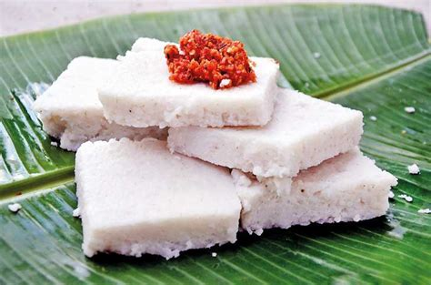

Milk Rice

Taste of Sri Lankan New Year
Ingredients
- 2 cups Kekulu Rice (substitutes: Basmati, Jasmine)
- 3 3/4 cups of water
- 400ml of thick coconut milk
- 2 teaspoons of salt
Instructions
- Wash the rice and drain the water, and put into a rice cooker
or a pot that you use to cook rice.
- Add water and 1tsp salt and cook the rice
- Add the thick coconut milk adn the rest of the salt to it and
dissolve well.
- Add the coconut milk to the cooked rice as soon as the rice is
cooked.
- Mix rice and coconut milk very well until the rice grains breakdown
and everything sticks together.
- Now can transfer the rice to a banana leaf or a tray and shape it.
But if you still get the row coconut milk smell can cook it again
for around 2-3 minutes.
- To shape the rice, transfer it to a cleaned banana leaf (while the
rice is still hot) then shape the milk rice with another banana leaf
as you want.
- Then you get a knife and put a little of coconut mik or water on it
so it will not stick to the rice. And cut it into squares or diamond
shapes.
Main page